Festlyset vårt
Adventstake
Adventstaken – eller festlyset vårt – kan settes direkte på bordet uten lysestake. Stammen er laget av metalltråd.
Håndlaget ved dypping
Det finnes to hovedmetoder å lage lys på. Enten støpes lysene i ulike former, eller så lages de ved dypping i smeltet lysmasse. Adventstaken vår er håndlaget ved dypping.
Hvert lys i staken blir møysommelig formet underveis i dyppeprosessen, slik at hvert lys blir unikt.
Dette lyset er krevende å produsere, både tidsmessig og håndverksmessig. Det krever også egne dypperedskaper i produksjonen.
Et uttrykk i utvikling
Underlaget på staken har endret seg de siste 30 årene, fra en mer blondeaktig bunn til en enkel, dråpeformet ring. Vi lager den også i ulike diametre.
På bordet
Mange foretrekker å plassere lyset på et enkelt, hvitt fat med stett. Enkelt og tidløst.